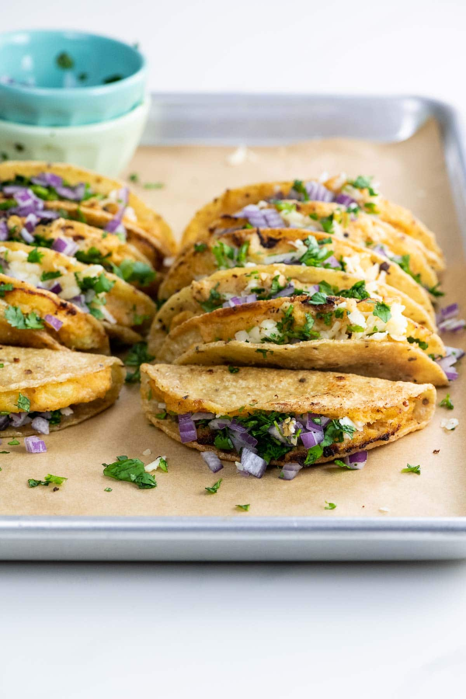

Potato Tacos

Description
Crispy potato tacos (tacos de papa) are crisp outside, creamy inside, and full of bold flavors. They're a real favorite around here, especially when paired with simple black bean soup. Here's how to make them great.
Ingredients
- 1 pound (454 grams) Yukon gold potatoes
- 2 ½ teaspoons fine sea salt, divided
- ½ cup (120 grams) sour cream
- ½ teaspoon onion powder
- ½ teaspoon sweet Hungarian paprika
- ½ teaspoon ground cumin
- ¼ teaspoon garlic powder
- ¼ teaspoon freshly ground black pepper
- 12 6-inch corn tortillas
- ½ cup (120 ml) safflower oil, for frying
- 4 ounces (113 grams) shredded extra-sharp cheddar cheese
- ½ cup chopped fresh cilantro
- ½ small red onion, minced
Steps
- Peel the potatoes and cut into roughly 1-inch cubes. Place in a small pot with cold water to cover and two teaspoons of the salt.
- Bring to a boil, then simmer for about 10 minutes, until tender.
- Drain and return to pot.
- In a small bowl, stir together the sour cream, remaining ½ teaspoon salt, onion powder, paprika, cumin, garlic powder, black pepper, and cayenne.
- Add mixture to potatoes and mash until smooth.
- One by one, heat the tortillas on both sides in a dry 12-inch frying pan.
- Spread a generous two tablespoons of potato into each tortilla and gently fold to form a taco.
- When all tacos are assembled, heat the oil in the same frying pan until thin and shimmering.
- Working three to four tacos at a time, fry on one side until crisp, about 90 seconds, then flip and repeat. Drain on paper towels and sprinkle with a little additional salt if you like.
- To serve, add some cheese, cilantro and red onion to the top of each taco (or gently open it and place inside),